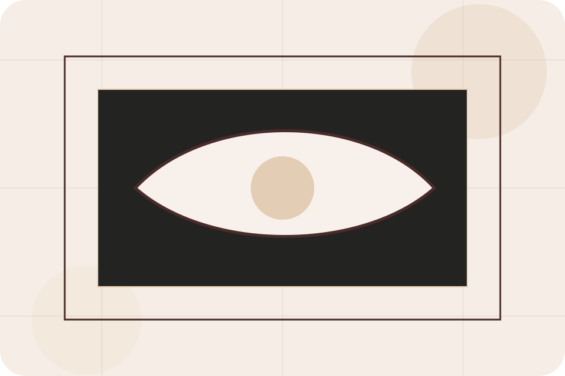
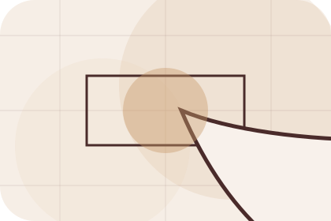
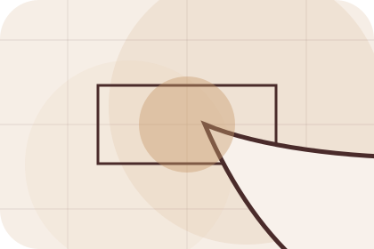
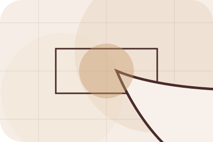
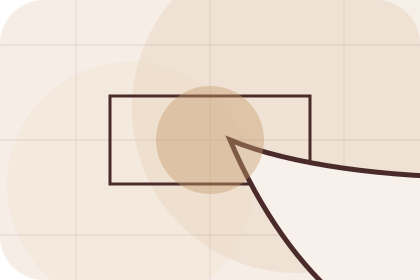
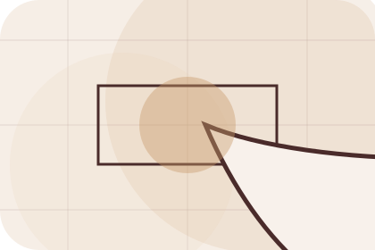
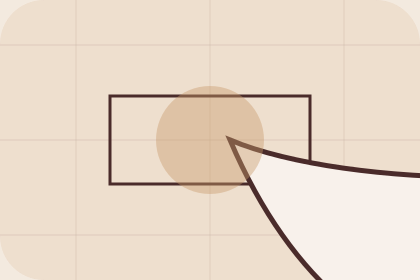

Best Fit
Who should use living and when it belongs in the rooms journey.
Rooms / 01
Rooms opens as a clear interiors decision hub: what Room offers, who it helps, why it matters, and which route to take first.
The first screen combines positioning, proof, primary action, and fast internal navigation, so people can act immediately or compare the rest of the rooms route with context.
Editorial room hero
Select the closest route and Room keeps the next step, proof, and follow-up expectation aligned with taste and home confidence.

Rooms / 03
Kitchen explains the practical scope, best-fit situations, and expected outcome so interiors visitors can compare options without decoding jargon.
The section keeps the offer concrete: what is included, who it is best for, what decision it supports, and which linked route gives the deeper detail.
Explore RoomsWho should use kitchen and when it belongs in the rooms journey.
The practical benefit visitors should expect after choosing this route.

Where to compare details, pricing, support, or contact options before committing.
Rooms / 04
Bedroom explains the practical scope, best-fit situations, and expected outcome so interiors visitors can compare options without decoding jargon.
The section keeps the offer concrete: what is included, who it is best for, what decision it supports, and which linked route gives the deeper detail.
Explore RoomsWho should use bedroom and when it belongs in the rooms journey.
The practical benefit visitors should expect after choosing this route.
Where to compare details, pricing, support, or contact options before committing.
Rooms / 05
Bathroom explains the practical scope, best-fit situations, and expected outcome so interiors visitors can compare options without decoding jargon.
The section keeps the offer concrete: what is included, who it is best for, what decision it supports, and which linked route gives the deeper detail.
Explore RoomsWho should use bathroom and when it belongs in the rooms journey.
The practical benefit visitors should expect after choosing this route.
Where to compare details, pricing, support, or contact options before committing.
Rooms / 06
Office explains the practical scope, best-fit situations, and expected outcome so interiors visitors can compare options without decoding jargon.
The section keeps the offer concrete: what is included, who it is best for, what decision it supports, and which linked route gives the deeper detail.
Explore RoomsRoom structures office around best fit, what changes, and a clear next route so visitors can compare the block quickly before they start the design.
Start DesignRooms / 07
Moodboards explains the practical scope, best-fit situations, and expected outcome so interiors visitors can compare options without decoding jargon.
The section keeps the offer concrete: what is included, who it is best for, what decision it supports, and which linked route gives the deeper detail.
Explore Rooms

Who should use moodboards and when it belongs in the rooms journey.
Rooms / 08
Needs frames the pressure behind the visit, then connects it to a practical path visitors can recognise and act on.
The copy avoids blame and panic. It shows the common friction, the practical consequence, and the calmer route Room uses to move people forward.
Explore RoomsNeeds names the real friction visitors bring to the rooms route, so the page feels relevant before any claim is made.

The copy connects that friction to practical risk, delay, confusion, or missed opportunity without exaggerating it.

The final cue moves visitors toward a clearer route instead of leaving them with the problem alone.
Rooms / 09
Ideas explains the practical scope, best-fit situations, and expected outcome so interiors visitors can compare options without decoding jargon.
The section keeps the offer concrete: what is included, who it is best for, what decision it supports, and which linked route gives the deeper detail.
Explore RoomsWho should use ideas and when it belongs in the rooms journey.
The practical benefit visitors should expect after choosing this route.
Where to compare details, pricing, support, or contact options before committing.
Rooms / 10
Room closes the rooms route with a clear action, a quick reminder of the value, and a low-friction way to start the design.
Visitors who are ready can use the primary action. Visitors who are still comparing can scan the section links, proof, and support routes before they start the design.
Start DesignThe final block keeps the choice simple: act now, compare one more proof route, or send enough detail for a focused response.
Start Designtaste and home confidence
A material-led interiors site with luxe moodboards, serif headlines, room selectors, and sourcing CTAs. Rooms ends with a direct path to start the design, plus enough context for visitors who still need to compare.

Start DesignInformation is provided for planning and should be reviewed for the final client, location, and operating rules.